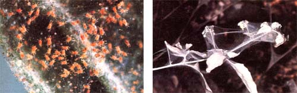

Here's the first of a series of articles that will help you tell friend from foe in your garden . . . and show you how best to discourage the six and eight-legged "undesirables".
Spider mites are tiny-from 1/150 to 1/50 of an inch in length-and range widely in coloration, from red to tan to green to white (some are even transparent!). These arachnids spin fine silken webs on the undersides of leaves and, in the process of feeding, remove chlorophyll from their host plant, hampering its ability to maintain vital functions. Infested foliage may turn bronze, yellow, silvery, or assume a finely spotted appearance. Eventually, the afflicted fronds will fall from the plant, each single leaf often harboring several hundred of the little mites. In particularly heavy infestations, the fruits of affected plants may take on a rough or deformed appearance.
Even the largest of these pests are barely visible to the naked eye (and it'd have to be a pretty alert eye, at that). Consequently, growers are usually unaware of the mites' presence until the telltale webs and leaf damage give the creatures away. Their most likely victims include fruit and nut trees, tomatoes, berries, and various ornamental and greenhouse plants.
Spider mites multiply rapidly, each female laying about 50 eggs, which-under optimum conditions-will mature into adult arachnids in as little as nine days! (Even under less favorable circumstances, it's rare that a month will elapse between generations.) Since warmth encourages this speedy development, some of the worst outbreaks of mite infestation occur in the hot and arid Southwest. However, the pests' range includes all of North America.
Should your orchard or garden suffer from a spider mite incursion, you can fight back in any one of a number of ways. In some situations (particularly when greenhouses are invaded), biological controls such as ladybird beetles, lacewings, or predatory mites can be effective. Another environmentally sound alternative is spraying the plant-including the undersides of the leaves-with a solution of 1/2 cup of buttermilk, 4 cups of wheat flour, and 5 gallons of water . . . that's been stirred and strained through cheesecloth.
In some cases, infestations can be controlled simply by hosing down the hosts with a strong jet of water, which knocks the mites off the foliage. (Of course, this wouldn't be advisable if one is treating fragile or especially brittle plants.) Finally, deciduous fruit and nut trees can be sprayed not during the growing season-with a dormant oil solution . . . which will kill the over wintering eggs of mites and those of many other pests. Some of the newer oil sprays are said to be safe for use on green plants as well, but I'd advise using them cautiously . . . and following the instructions to the letter!
|
 Under magnification, the mites and eggs are easily seen...ut to the naked eye, the "colony" of press may seem to be a simple spider web. |
|
|